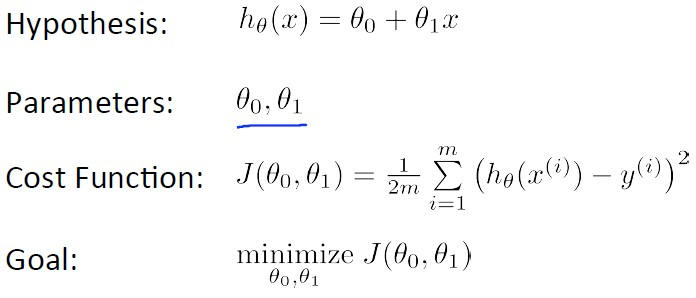
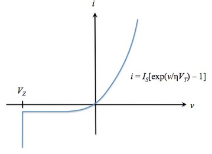
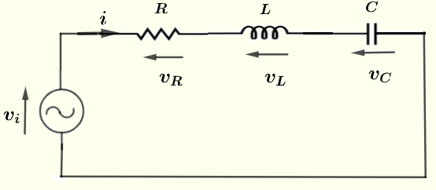

Due - End of week 7
This is a group project of 2 or 3 students per group. The groups can be found in the document Assignment1_Groups.docx. Each group will also be assigned a page on Teams so you can work together online.
Work on an analog circuit simulator has been started by a former employee and you are asked to take over. You must consider the theoretical background of the work, and the completion of the design and implementation that was in progress.
There are three approaches to analog circuit simulation: numerical methods, machine learning, and heuristic algorithms. Each is described below.
Simulation is a very important part of design. Most hardware projects undergo rigorous simulations before implementation actually occurs. Simulating the behaviour of an analog circuit is quite simple. One can simply obtain the differential equation for the circuit, and use well known numerical methods to solve them.
Several numerical algorithms are well know. Below is a summary of a few:
The problem of applying well known numerical methods to solving analog electronic circuits is that these methods assume linear behaviour. The key point that distinguishes a nonlinear circuit from a linear circuit is the relationship between the input and output signal. If you graph the output signal versus the input signal for a linear circuit, then the graph will be a straight line for all input signal levels. With a nonlinear circuit, the output will not be a straight line. Instead, the output will be a curve.
It is likely that all the circuits you built were linear circuits, meaning they only contained resistors, capacitors, and non-ferritic inductors. While this is a great way to get an important introduction into the fundamentals of basic circuits, almost all modern circuits contain many more complicated elements and functionality. For a discussion of linear and nonlinear circuits, see The Basics of Linear vs. Nonlinear Circuits.
To summarize, linear devices include resistors, capacitors, and most inductors when driven with low current. Nonlinear devices include semiconductor devices (transistors and diodes), ferrite inductors driven at high current where magnetic saturation occurs, all amplifiers, and almost all integrated circuits. Therefore, for non-linear circuits, we cannot rely on numerical methods and we have to take another approach.
The machine learning cost function attempts to approximate real data with a hypothetical equation. Let us say we
wish to approximate data with a first order function:
hθ(x) = θ0 + θ1 x
The parameters we want to guess are θ0 and θ1. We generate a cost function that determines the difference
between actual data and this approximation by taking the square of the difference between the points. We choose
θ0 and θ1 to minimize this difference. This is summarized below:

It is possible to apply the machine learning cost function to non-linear electronic circuits if we expand
hθ(x) to a much higher order equation. For instance:
hθ(x) = θ0 + θ1 x + θ2 x2 + θ2 x3 ...
We could apply voltages to the circuits and measure the currents we seek, determine the optimum θ's, and use that to predict behaviour.
A heuristic algorithm is one that is designed to solve a problem in a faster and more efficient fashion than traditional methods by sacrificing optimality, accuracy, precision, or completeness for speed. Heuristic algorithms often times used to solve NP-complete problems, a class of decision problems. In these problems, there is no known efficient way to find a solution quickly and accurately although solutions can be verified when given. Heuristics can produce a solution individually or be used to provide a good baseline and are supplemented with optimization algorithms. Heuristic algorithms are most often employed when approximate solutions are sufficient and exact solutions are necessarily computationally expensive.
For a linear electronic circuit, a heuristic algorithm is not required, since all voltages and currents through the circuit can be solved using
numerical analysis. For non-linear circuits, a heuristic approach is required. Consider the diode. The voltage current relationship is given as:
i(v) = IS[e(v/(ηVT))-1], v>VZ
where IS is the reverse saturation current,
v is the applied voltage (reverse bias is negative),
VT=T/11,586 is the volt equivalence of temperature, and
η is the emission coefficient, which is 1 for germanium devices and 2 for silicon devices.
Note that for v≤VZ, the diode is in breakdown and the ideal diode no longer applies.
The ideal diode i-v characteristic curve is shown below:

Sometimes the inverse relation is more useful, and that is the voltage across a diode as a function of the current:
v(i) = ηVTln[(i/IS)+1]
There are many other non-linear circuit components. For instance, the transistor, the operational amplifier, any magnetic circuit where magnetic saturation occurs. In fact, such simple components such as the resistor, capacitor and inductor exhibit non-linear behaviour if they are pushed to their limits.
There are several parts to assignment 1. First is the cost function, which is used to guess the current for a particular instant in time. The second are the circuit components, the third is the graphics.
Assignment 1 revolves around a cost function. This is a function that tries to predict the currents of the components given the applied voltage. The cost function sums the voltages of the components and compares to the applied voltage. The "cost" is the difference between the applied voltage and the sum of the voltages across the components. Several iterations are taken until the cost is below a tolerance level, which is typically very low. The following variables are used:
Some files have been given to you. You can change these. The component class, which acts as a base class for all circuit components,
is given to you. Each component will display its current in a different colour, and each component has a name. There are pure virtual
functions which require implementation in derived classes. The header file for the analog circuit has been given to you. This class
contains a list of circuit components, a static display function which can be called from all of its components, a run function for
when you want to run the actual simulation, the cost function as described above, and a destructor. Some function implementations
have been given in the CPP file for the analog circuit. Finally, a main function has been provided in full. See all files at:
Component.h, (complete)
AnalogCircuit.h, (complete)
AnalogCircuit.cpp (incomplete) and
AnalogCircuitMain.cpp (complete).
The analog circuit used in this assignment does not have non-linear components, but can be used to verify the functionality of your software. We will
apply a sinusoidal voltage for 0.6 seconds, then 0 volts for the remainder of the simulation. The circuit looks as follows:

Recall from your physics and electronics classes, the voltages as a function of current across these components are as follows:
The graphics library suggested for this assignment is OpenGL. The following link explains how to add OpenGL to Visual Studio:
Configuring Visual Studio for OpenGL Development.
To summarize:
The questions comprise a large portion of this assignment. Here you must show me that you can analyze the project and make suggestions for improvements.
| Does not meet expectations | Satisfactory | Good | Exceeds Expectations | |
|---|---|---|---|---|
| The Project Plan (3 marks) | Does not meet requirements | Meets the most important requirements | Meets all requirements with minor errors | Meets all requirements with no errors |
| The Prototype (1 mark) | Does not meet requirements | Meets the most important requirements | Meets all requirements with minor errors | Meets all requirements with no errors |
| The Graphics Library (2 marks) | Does not meet requirements | Meets the most important requirements | Meets all requirements with minor errors | Meets all requirements with no errors |
| The Component Classes (2 marks) | Does not meet requirements | Meets the most important requirements | Meets all requirements with minor errors | Meets all requirements with no errors |
| The Analog Circuit Class (2 marks) | Does not meet requirements | Meets the most important requirements | Meets all requirements with minor errors | Meets all requirements with no errors |
| Code Documentation (1 mark) | Does not contain documentation | Contains header documentation for either all files or for all functions within each file | Contains header documentation for all files and for most functions within each file | Contains header documentation for all files and for all functions within each file. Documents unclear code. |
| Questions (4 marks) | Answers no question correctly | Answers some questions correctly | Answers most questions correctly | Answers all Questions correctly |
Please email all source code and answers to questions to: miguel.watler@senecacollege.ca
Your answers to questions can be submitted in a separate document or embedded within your source code.
You will be docked 10% if your assignment is submitted 1-2 days late.
You will be docked 20% if your assignment is submitted 3-4 days late.
You will be docked 30% if your assignment is submitted 5-6 days late.
You will be docked 40% if your assignment is submitted 7 days late.
You will be docked 50% if your assignment is submitted over 7 days late.